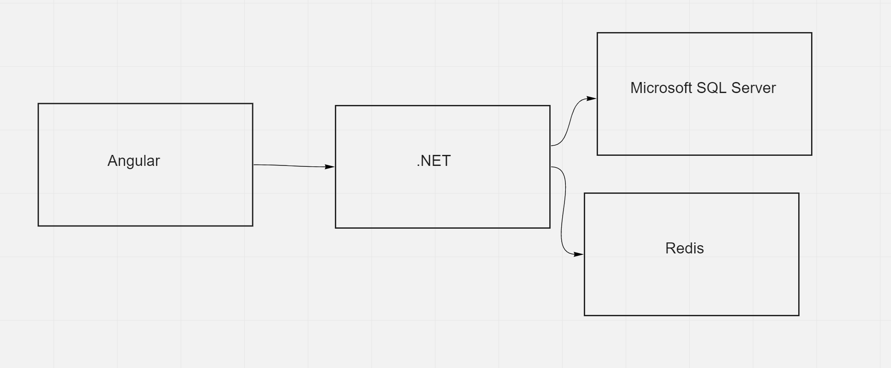
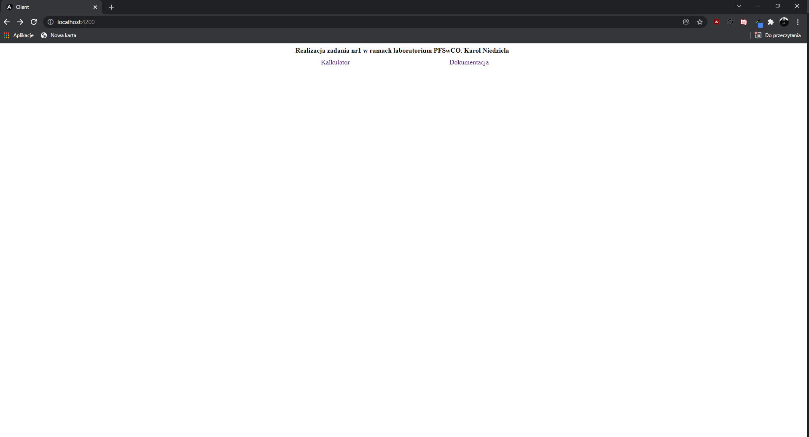
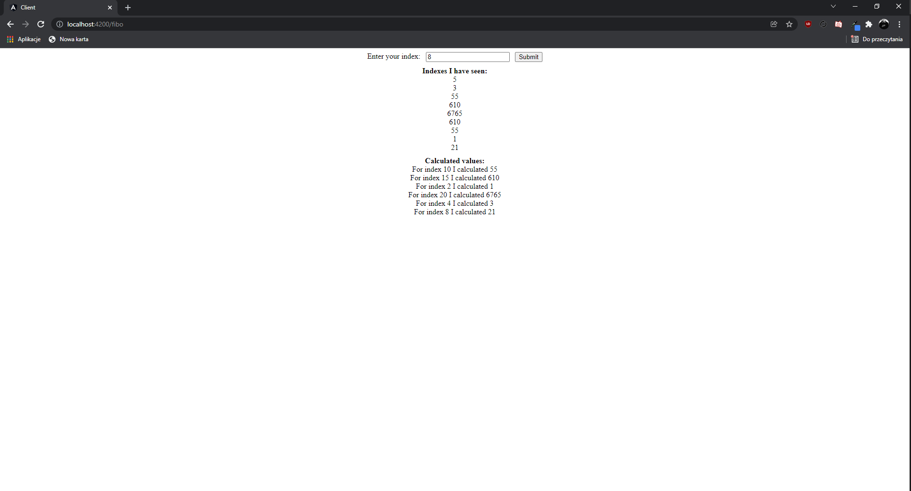
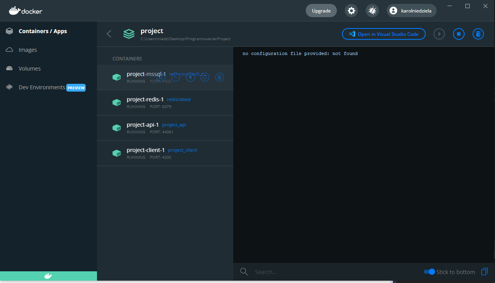

Dla zadania zostały przygotowane 4 usługi. Po stronie serwerowej
wykorzystano platforme .NET, jako magazyny danych użyto Redisa oraz
Microsoft SQL Server. Po stronie klienta wykorzystano Angulara.

Aplikacja po stronie serwera działa na porcie 44361. Zastostowano zmienne
środowiskowe dla certyfikatów, ponieważ aplikacja napisana w .NET
domyślnie przekierowuje na https, dlatego przygotowano odpowiedni
certyfikat w folderze conf. Podłączono wolumeny dla aplikacja, ale również
dla ścieżki do usersecrets, gdzie mogą być przechowywane klucze. Aplikacja
po stronie klienta działa na domyślnym porcie dla Angulara, czyli 4200.
Także podłączono wolumeny, które umożliwią śledzenie zmian w kodzie. Do
uruchomienia całej usługi wystarczy użyć polecenia docker compose -f
docker-compose.dev.yml up --build
Pierwszy screen działającej usługi:

Drugi screen działającej usługi:

Trzeci screen działającej usługi:
